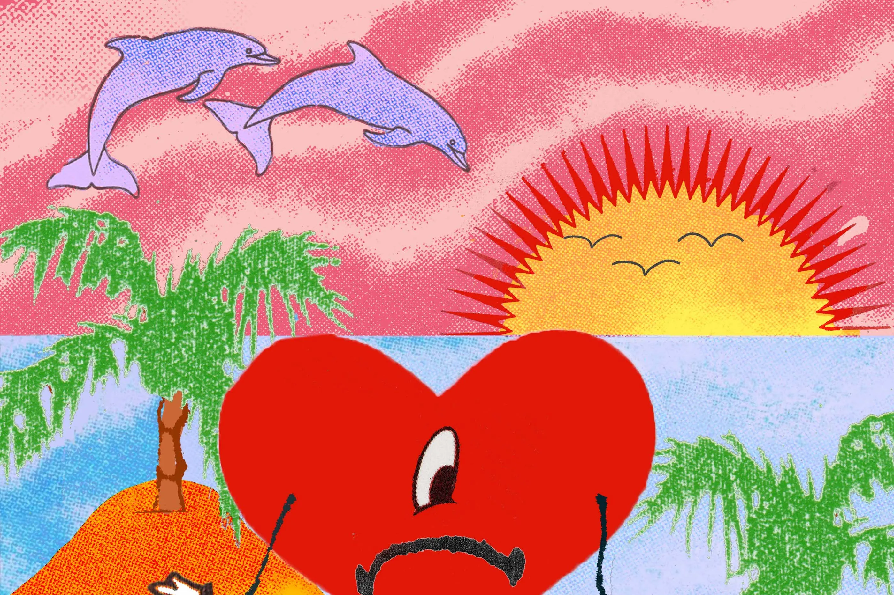

Un Verano Sin Ti (2022)
- Moscow Mule
- Después de la Playa
- Me Porto Bonito
- Tití Me Preguntó
- Un Ratito
- Yo No Soy Celoso
- Tarot
- Neverita
- La Corriente
- Efecto
- Party
- Aguacero
- Otro Atardecer
- Un Coco
- Andrea
- Me Fui de Vacaciones
- Un Verano Sin Ti
- Agosto
- Callaita